Risk Desk Guide
For the risk team and the second trader. Always use the server workspace: it shows the trading team's limits, positions and orders: the aggregate over all the team's algos and manual orders.
0. Before you start
- Unzip (once): unzip BigajRiskDesk.zip to a short path such as
C:\BigajRiskDesk. The directory path must be less than 128 characters. - Firewall (once): open
MirrorConfig.jsonin that folder and note theListenPort(e.g.47793). Allow incoming TCP on that port: Windows Security > Firewall & network protection > Advanced settings > Inbound Rules > New Rule... > Port, TCP, that port, Allow the connection, name itBigajRiskDesk Mirror. The CME box connects in to your Mirror on this port. - VPN (every time): connect to the TNS VPN with the account
arb-risk. Your PC reaches the CME box only through it.
1. Starting up and the Mirror
Double-click Start.bat. Two console windows open (the Mirror and the Workspace); leave both open. The Workspace window fills in a few seconds later.
Why the Mirror: the trading server lives on a machine at CME, and your PC cannot read its memory directly. The Mirror keeps a live copy of the server on your PC over one network link, and carries your orders, limit edits and pause/play up to the box.
If the Mirror stops with a message about "array layout", the desk and the box run different versions: ask for the matching zip.
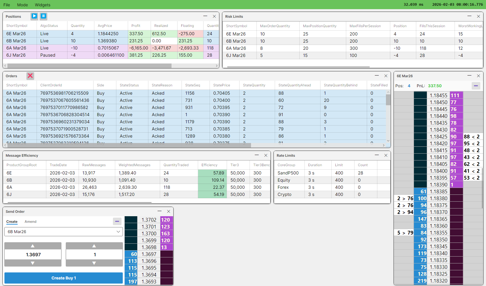
2. The top bar and the Workspace window
Top bar (right): the latency, then the clock.
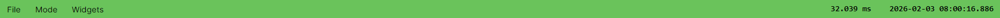
| Shows | Meaning |
|---|---|
| e.g. 264.764 ms | Connected. Round trip to the CME box and back. If it is climbing, the connection might be broken and your clicks will be lost. |
| Connection broken – reconnecting… | The link to the box is down. Your working manual orders are cancelled after 10 s. |
| Remote Mirror offline | The Mirror on this PC stopped. Double-click Mirror.exe in the package folder. |
| The clock (UTC) | Time of the latest market-data update from the server. It should keep ticking during trading hours; if it stops while the market is active, call the trader. It stops normally when the market is closed. |
Add a widget: Widgets menu. Drag its title bar to move it, drag an edge to resize, ✕ to close.
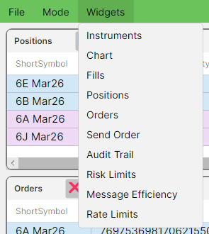
Right-click: every action is on a right-click menu. Right-click a row for that row's actions, or a column header to show or hide columns. For example, a Positions row (its items are explained in section 3):
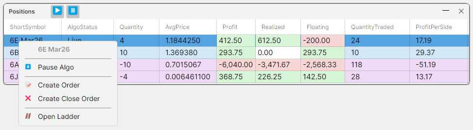
Save a layout: File > Save Workspace As..., type RiskDesk, click OK. The desk opens the layout named RiskDesk at every start-up.
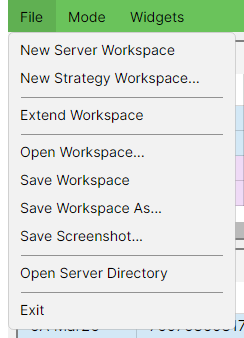
- Load a layout: File > Open Workspace..., pick the file, click OK.
- Open a different layout at start-up: in
WorkspaceConfig.jsonchange"WorkspaceName"(it is"RiskDesk").
3. Positions
One row per instrument: the trading team's position, the aggregate over all the team's algos and manual fills. Also where you pause the algos.
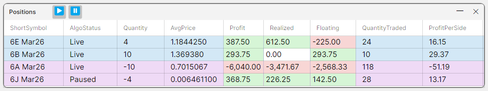
| Column | Meaning |
|---|---|
| AlgoStatus | The team's master algo switch for the instrument (every algo): Live or Paused. |
| Quantity | Net position in lots (+ long, − short). |
| AvgPrice | Average entry price of the open position (NaN when flat). |
| Profit | Realized + Floating, in US dollars. |
| Realized | Profit locked in on closed lots. |
| Floating | Profit on the open position at the mid price. NaN when the book has no bid or no ask. |
| QuantityTraded | All lots filled on the instrument, both sides, kept across sessions. |
| ProfitPerSide | Profit per lot traded. |
Right-click a row for everything you can do on that instrument (the menu is shown in section 2):
- Pause Algo / Resume Algo: the master algo switch for the instrument. ⏸ and ▶ in the title bar do every instrument at once. Pausing stops every algo on that instrument from sending new orders and they cancel their own; it never touches manual orders.
- Create Order: opens Send Order for the instrument (section 8).
- Create Close Order: opens Send Order filled with the quantity that flattens the position. Nothing is sent until you click the button.
- Open Ladder: the instrument's ladder (section 8).
4. Risk Limits
One row per instrument: the trading team's limits and its exposure, aggregated over every algo and manual order.
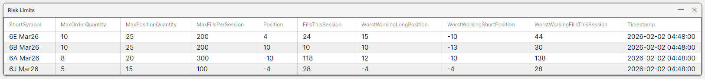
| Column | Meaning |
|---|---|
| MaxOrderQuantity | Largest single order, in lots. 0 blocks every new order. |
| MaxPositionQuantity | Largest team position, long or short, counting every working order as if it filled. |
| MaxFillsPerSession | Most lots the algos may fill this session (algos only; manual orders ignore it). |
| Position | The team's net position. |
| FillsThisSession | Lots filled by algos this session, both sides. Back to 0 at the session close. |
| WorstWorkingLongPosition | Position if every working buy filled. Compare with MaxPositionQuantity. |
| WorstWorkingShortPosition | Position if every working sell filled. Compare with −MaxPositionQuantity. |
| WorstWorkingFillsThisSession | Algo fills this session if every working algo order filled. Compare with MaxFillsPerSession. |
| Timestamp | When the limits were last changed (UTC). |
To change a limit: right-click the row > Edit RiskLimit, type the new values, click Confirm. The row shows them within a second; they apply to the next order and are saved on the box. Lowering a limit does not cancel working orders.
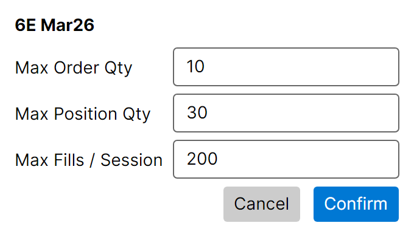
5. Rate Limits
How many order messages the team may send. One row per order channel (exchange session).
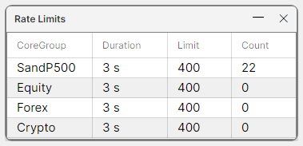
| Column | Meaning |
|---|---|
| CoreGroup | The order channel's name. |
| Duration | The length of the rolling window, e.g. 3 s. |
| Limit | Most messages allowed in any window of that length. |
| Count | Messages in the window right now. |
When the window is full, new orders and amends are refused (manual and algo alike). Cancels are never refused.
The server's limit sits below CME's own per-session throttle, which rejects and then logs out a session that sends too fast: CME Globex Messaging Controls.
6. Message Efficiency
CME compares the team's order messages with the lots it trades, per product group and day, and charges if the ratio passes its benchmark. This widget only displays the numbers; it never refuses an order. Weights: new order 0, amend 1, cancel 3 (×0.1 outside 07:00–16:00 CME time).
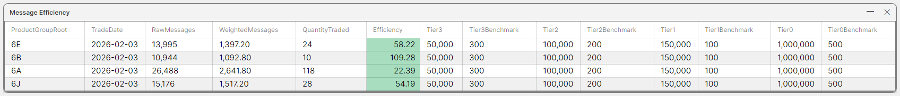
| Column | Meaning |
|---|---|
| ProductGroupRoot | CME product group, e.g. 6E. |
| TradeDate | The trading day the counts belong to. |
| RawMessages | Messages sent today, each counted once. |
| WeightedMessages | Messages after the weights above. |
| QuantityTraded | Lots filled today, both sides. |
| Efficiency | WeightedMessages ÷ QuantityTraded. Green under 75% of the benchmark, yellow, orange, red at or over it. |
| Tier1–3, Tier1–3Benchmark | Once RawMessages passes a tier's threshold, that tier's benchmark applies. |
CME's rules, tiers and surcharges: CME Globex Messaging Efficiency Program; the benchmark per product group: MEP benchmarks.
7. Orders
Every working order of the trading team, algo and manual. Finished orders disappear.
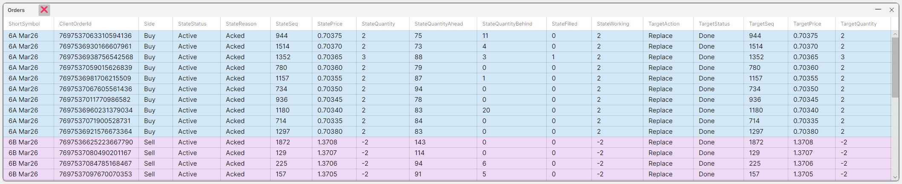
- Cancel one: right-click the row > Cancel Order (any order).
- Amend a manual order: right-click > Amend Order (see section 8).
- Cancel everything: the red ❌ in the title bar. A Live algo places new orders straight away, so pause it in Positions first.
8. Ladders and manual orders
Open a ladder: right-click the instrument in Positions > Open Ladder. Columns left to right: your buys, bids, price, asks, your sells. Left-click does nothing; everything is on the right-click menu.
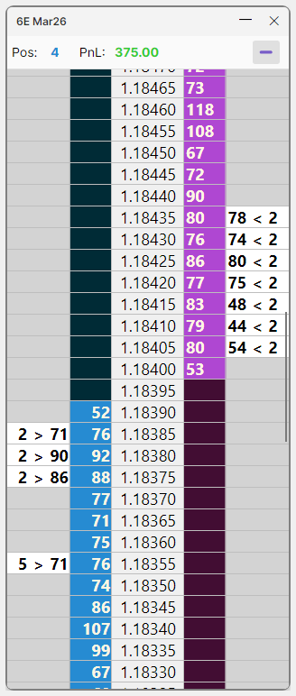
- Create: right-click a price > Create Order @ price. In Send Order type the quantity (positive buy, negative sell), check the button reads e.g. Create Buy 2, click it.
- Amend: right-click your order on the ladder or in Orders > Amend Order, click the Amend tab, change price or quantity, click Amend. Manual orders only: an algo's order can only be cancelled.
- Cancel: right-click your order on the ladder or in Orders > Cancel Order.
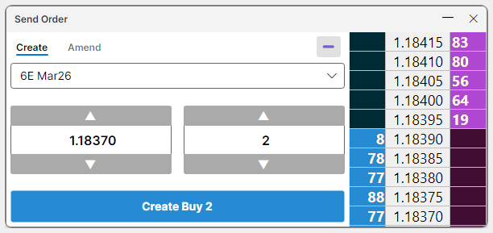
Which limits a manual order meets: the team's Max Order Qty and Max Position Qty, the rate limit, and the market being open. It ignores the fills limit, every strategy limit and the algo pause. Manual orders from the server workspace book to the team's house book (its manual account), not to any algo.